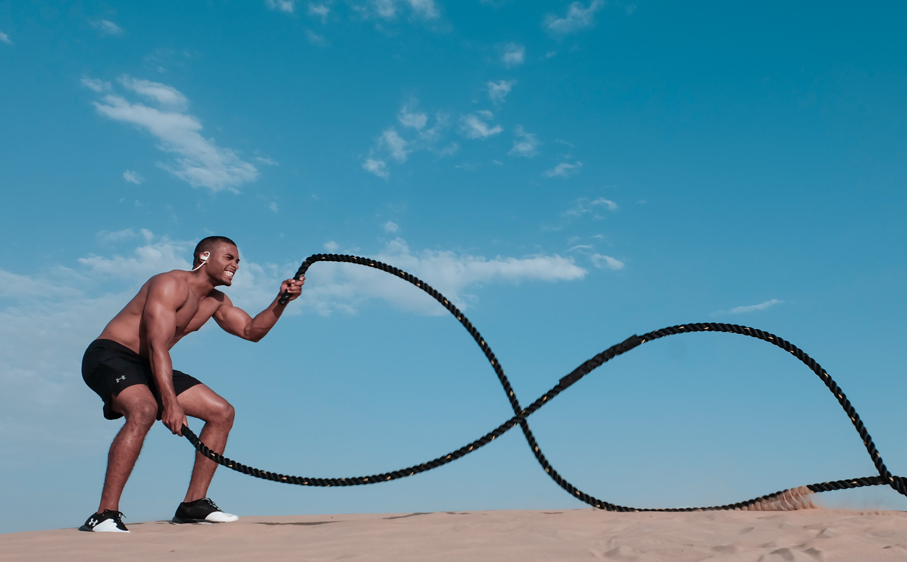
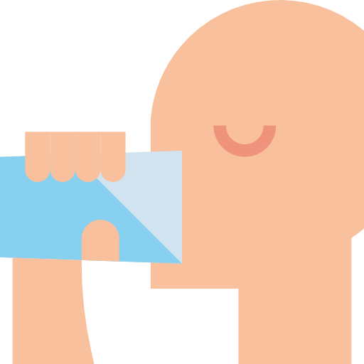
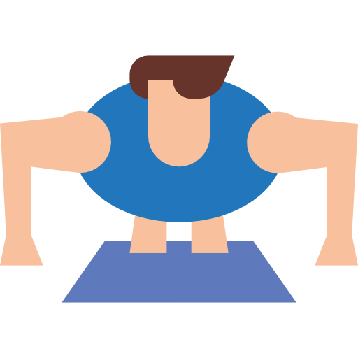

Culking: + Massa - Gordura


Culking é a junção das palavras bulking e cutting que são técnicas de ganho de massa e perca de gordura mantendo a massa respectivamente. Essas duas técnicas são utilizadas por grandes atletas e o cutting normalmente é feito em pré-competições.
| Técnica | Objetivo | |
|---|---|---|
| Bulking | Ganho de massa magra | Culking |
| Perda de gordura mantendo a massa ganha no bulking | Troca de gordura por massa magra mantendo o peso na balança |
"Mas é possível trocar a gordura por massa?"
A resposta é sim, pequeno gafanhoto! O culking é uma das técnicas usadas para esse objetivo específico.
A execução até a falha proporciona:
- Rompimento das fibras musculares
- Maior resistência muscular
- Ganho de força
- Queima de gordura durante 48 horas
Então, quanto mais você se dedicar no horário de treino, mais você vai conseguir resultados significativos, não importa qual o seu objetivo!
Algumas outras dicas para você manter o foco e treinar até a falha:

Mantenha-se hidratado!

Treine mais e converse menos!
Vá alimentado, mas não demais!
Tenha disposição!